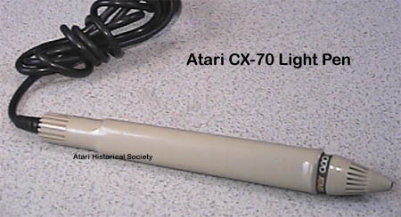

The Atari CX-70
Light Pen

The Atari CX-70 light pen, designed
by Sharon Ashton of Atari's Home Computer Division industrial design group.
The light pen opened up an whole new world of possibilities which today
are finally scene being used such as touching on screen buttons for macro
selections, inventory control, medical check lists and so forth.
The light pen was truly a cutting edge technology which Atari helped to
bring into the home. The XL series of computers also saw a
new version of the Light pen called the CX-75 which was thinner and packaged
with very good quality drawing software.